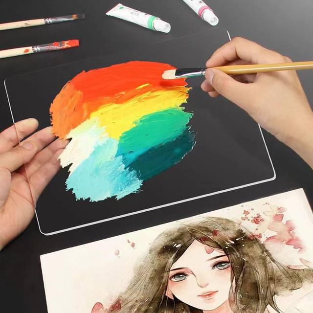
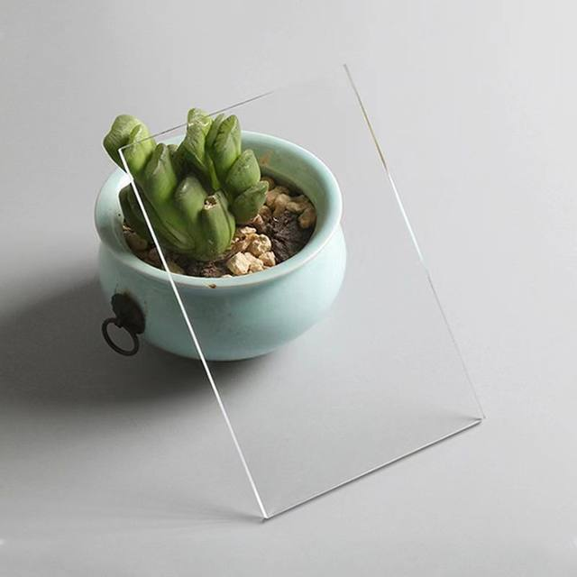
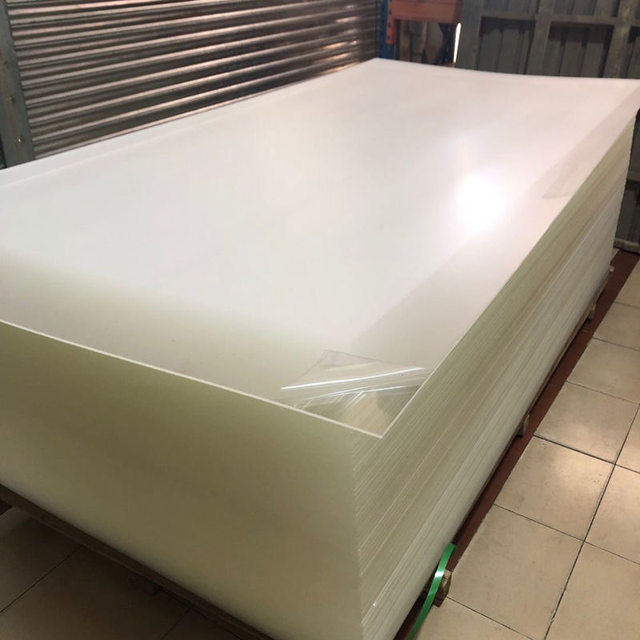
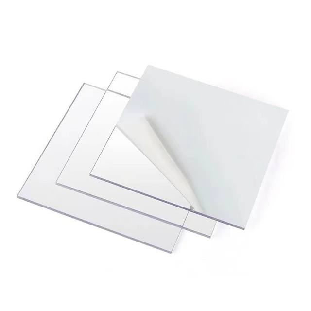

This product is 1mm and 1.5mm transparent acrylic sheet 5pcs each.
Suitable for painting handmade replacement photo frame glass and many other uses
This product has passed the ROHS test and can be used with confidence.
Please remove the protective film after receiving the goods and use it.
If you have any questions or need a different size, please contact customer service
Laser cut edges smoothnot easily deformed Easy to clean

not easily deformed

Factory direct sale complete specifications


transparent plate for cuttingPlexiglasspicture frame mirrorpaintingcraft materialfoto frame glass replacemenTransparent acrylicA3 A4 A5 8k